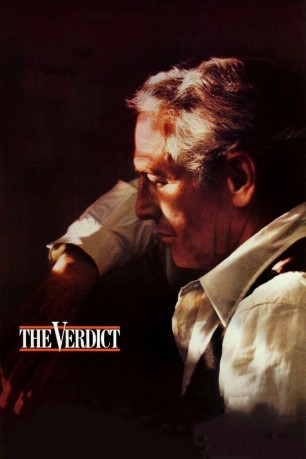

#3696 The Verdict - Die Wahrheit und nichts als die Wahrheit
Alternativ: The Verdict
Auszeichnungen: für 5 Oscars nominiert
 
 IMDB-Wertung: 7.8 / 10
IMDB-Wertung: 7.8 / 10  Metascore: 0
Metascore: 0 
Frank Calvin (Paul Newman) - ehemals Staranwalt, jetzt Trinker - ist am Ende. Aber er hat eine allerletzte Chance, weiter ganz oben zu sein: Ein Mädchen liegt im Koma. Der Kunstfehler eines Arztes. Das Krankenhaus will nicht zahlen und kauft den besten Verteidiger der Stadt: Ed Concoannon (James Mason). Frank Calvin soll schweigen. Man bietet ihm viel Geld, doch er nimmt die Herausforderung an. Er setzt alles auf eine Karte.
Jahr: 1982
Dauer: 128 Minuten
FSK: 6
Land: USA Studio: 20th Century FoxTonspuren:
Untertitel: Deutsch,
Auflösung: 720p (1280x696) Größe: 5591 MB
Genre: Drama
Regisseur:  Sidney Lumet
Sidney Lumet
Drehbuch: Rob Margolies
Soundtrack:
Darsteller:
 Paul Newman als Frank Galvin
Paul Newman als Frank Galvin Charlotte Rampling als Laura Fischer
Charlotte Rampling als Laura Fischer Jack Warden als Mickey Morrissey
Jack Warden als Mickey Morrissey James Mason als Ed Concannon
James Mason als Ed Concannon- Milo O'Shea als Judge Hoyle
 Lindsay Crouse als Kaitlin Costello Price
Lindsay Crouse als Kaitlin Costello Price Edward Binns als Bishop Brophy
Edward Binns als Bishop Brophy- Julie Bovasso als Maureen Rooney
 Roxanne Hart als Sally Doneghy
Roxanne Hart als Sally Doneghy James Handy als Kevin Doneghy
James Handy als Kevin Doneghy Wesley Addy als Dr. Towler
Wesley Addy als Dr. Towler Joe Seneca als Dr. Thompson
Joe Seneca als Dr. Thompson Colin Stinton als Billy
Colin Stinton als Billy- Tony LaFortezza als Sheraton Bartender
 Tobin Bell als Courtroom Observer , uncredited
Tobin Bell als Courtroom Observer , uncredited Kevin Fennessy als Funeral Mourner , uncredited
Kevin Fennessy als Funeral Mourner , uncredited- Willow Hale als (uncredited
 Bruce Willis als Courtroom Observer , uncredited
Bruce Willis als Courtroom Observer , uncredited- Lewis J. Stadlen als Dr. Gruber
 Kent Broadhurst als Joseph Alito
Kent Broadhurst als Joseph Alito- Burtt Harris als Jimmy - the Bartender
- Scott Rhyne als Young Priest
- Susan Benenson als Deborah Ann Kaye
- Evelyn Moore als Dr. Gruber's Nurse
- Juanita Fleming als Dr. Gruber's Maid
- Jack Collard als Bailiff
- Ralph Douglas als Clerk
- Gregor Roy als Jury Foreman
- John Blood als Funeral Director
- Dick McGoldrick als Manager of 2nd Funeral Parlor
- Edward Mason als Widow's Son
- Patty O'Brien als Irish Nurse #1
- Maggie Task als Irish Nurse #2
- Joseph Bergmann als Friedman
- Herbert Rubens als Abrams
- J.P. Foley als John - Cigar Stand
- Leib Lensky als Wheelchair Patient
- H. Clay Dear als Courthouse Lawyer
- J.J. Clark als Courthouse Guard
- Gregory Doucette als Sheraton Bar Waiter
- Marvin Beck als Sheraton Bar Patron
- Herb Peterson als Sheraton Bar Patron
- Jon Hopwood als Courtroom Observer , uncredited
- Cullen O. Johnson als Bailiff , uncredited
Datei: X:\1982\Verdict - Die Wahrheit und nichts als die Wahrheit, The (1982, FSK6, 1280x696).mkv seit 20.05.2016
Festplatte: HD 1980-1986
 Es gibt insgesamt 31 Filme in der Gruppe '1982'
Es gibt insgesamt 31 Filme in der Gruppe '1982'